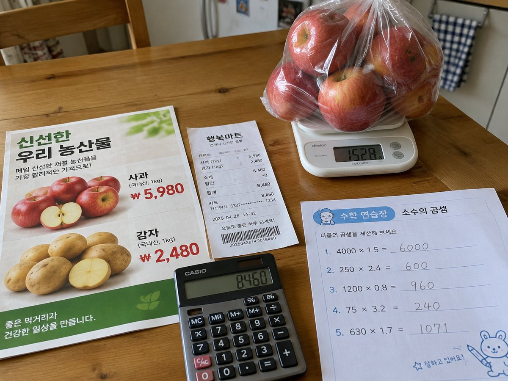

전체 단원 › 실험·활동 › 5학년 2학기 수학
마트 전단지 소수 장보기

전단지 속 100g당 가격과 kg 단위 무게로 장보기 계산을 하며, 소수를 곱하면 왜 값이 작아지기도 하는지 알아봐요.
30분 · 난이도 ★★☆ 보통
준비물
- 마트 전단지 또는 영수증 — 무게(kg, g)가 적힌 상품이 있으면 좋아요
- 장보기 계산지 도안 — 예시 상품과 계산 칸 (A4 1장)
- 계산기 (확인용) — 먼저 손으로 풀고 확인할 때만 써요
하는 방법
- 상품 고르기
계산지의 예시 상품(사과 1kg 4,000원, 돼지고기 100g 2,500원 등)이나 전단지에서 무게 단위 상품을 골라요. - 어림하기
사과 1.5kg이면 1kg보다 많고 2kg보다 적으니 4,000원과 8,000원 사이겠죠? 먼저 어림값을 적어요. - 소수 곱셈하기
4,000 × 1.5 = 6,000원. 자연수처럼 곱한 뒤 소수점 아래 자릿수만큼 소수점을 옮겨요. - 1보다 작은 수 곱하기
사과 0.8kg은 4,000 × 0.8 = 3,200원. 1보다 작은 수를 곱하니 4,000원보다 작아졌어요. - 총액과 거스름돈
고른 상품을 모두 더하고 20,000원을 냈을 때 거스름돈을 계산해요. - 실제 영수증과 비교
다음 장보기 때 영수증의 무게와 가격을 보고 계산이 맞는지 확인해요.
생각해 봐요
- 어떤 수에 0.5를 곱하는 것은 어떤 계산과 같을까요?
- 곱했는데 처음 수보다 작아지는 경우는 언제일까요?
- 1.2 × 1.5에서 소수점은 어디에 찍어야 할까요?
왜 그럴까?
소수를 곱할 때는 먼저 소수점이 없다고 생각하고 자연수처럼 곱해요. 그다음 두 수의 소수점 아래 자릿수를 더한 만큼 오른쪽에서부터 세어 소수점을 찍어요. 그리고 1보다 작은 수를 곱하면 결과가 원래 수보다 작아진다는 것도 기억해요.
학교 교육과정 연결
- [6수01-13] 소수의 곱셈의 계산 원리를 탐구하고 그 계산을 할 수 있다.